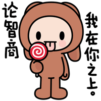
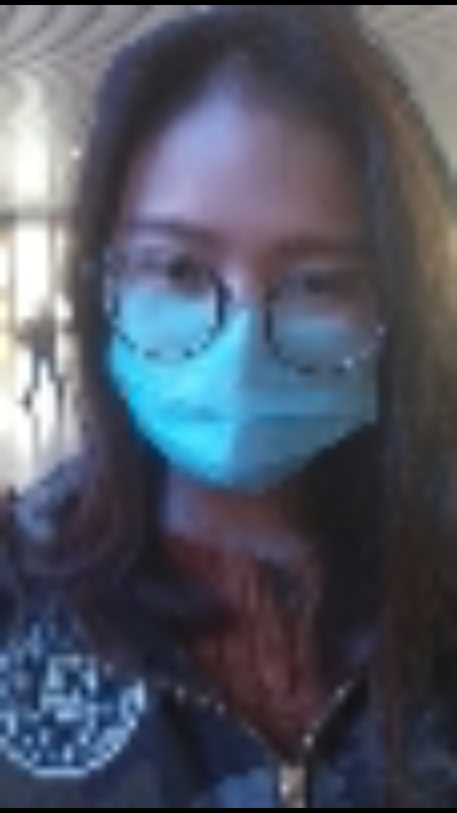
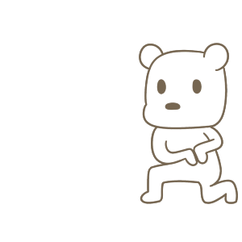

-
第一次相约
在外面用家乡话还真是不太方便沟通呢，和你打电话都不知道该怎么说。特别扭，经常说不了几分钟。偶然一次下班后，开始用普通话给你打电话，那一次可聊了好一阵儿。以后就一直这么沟通下来了。
2016年10月15日星期六。今天是第一次在外面正式见面，心里还是有点儿很紧张的，不知道过去该怎么办，做点儿什么，说点儿什么。话说我们才见过一面，还是晚上，现在都不知道长什么样了，要是认不出来该有多尴尬哎。
记得我是十一点左右到石家庄火车站的，你还亲自来接我了，下车后担心找不到，你发了下面这个照片。还说我是不是走错方向了，我可不像你那么路痴哟 ～(￣▽￣～)(～￣▽￣)～

一起去逛了万达，本来想先吃饭，可惜人好多，就先找了个坐的地方聊天。见你之前还在担心没有话题聊，两个人干坐着该有多尴尬，可见了面完全没有那种感觉，想知道的好多好多。可是面对面坐着的时候还是有点儿紧张哎，你都完全没看出来，哈哈哈。时间过的好快，下午吃了个饭就会学习了那天还飘了个零星小雨，我来的时候还考虑着，要不要不带伞和你挤同一个呢，后来想想还是算了，第一次见面这样影响不好，这个小心思你有木有发现呢，嘿嘿...
 